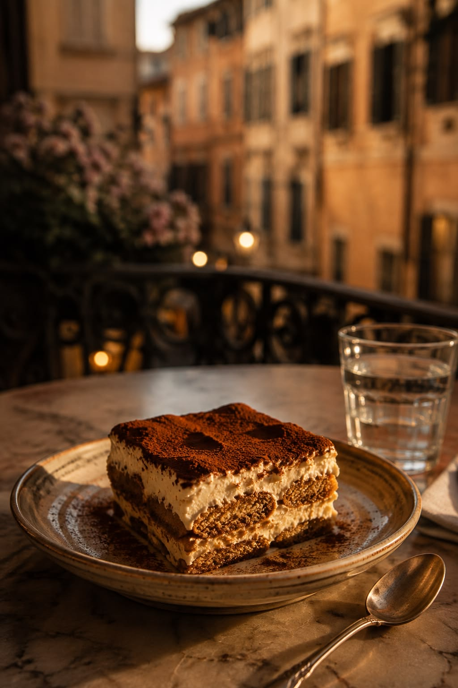

Our classic tiramisuTiramisu is one of the main desserts served at L'Espresso. It is a classic Italian dessert made with layers of coffee-soaked ladyfingers, mascarpone cream, and cocoa powder.
The coffee flavor in tiramisu makes it a perfect dessert to enjoy with espresso or cappuccino. It is creamy, lightly sweet, and served chilled by the slice.
We also serve European-inspired pastries such as butter croissants, chocolate croissants, biscotti, and small cakes. These desserts give customers something sweet to enjoy during their visit.
Sweet Favorites
- Classic Tiramisu - $6.50
- Butter Croissant - $3.50
- Chocolate Croissant - $4.00
- Lemon Cake - $5.00
- Chocolate Biscotti - $2.75